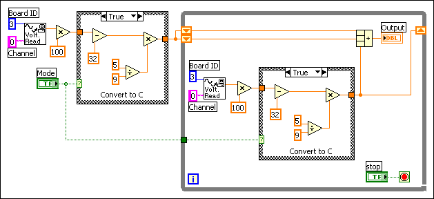
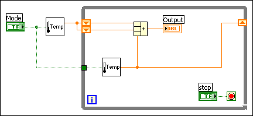

As you create VIs, you might find that you perform a certain operation frequently. Consider using subVIs or loops to perform that operation repetitively. For example, the following block diagram contains two identical operations.

You can create a subVI that performs that operation and call the subVI twice, as shown in the following block diagram.

You also can reuse the subVI in other VIs. You can use a loop to combine common operations.